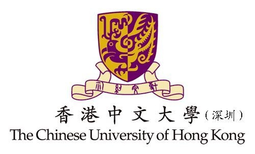

|  |
|
|
香港中文大学（深圳）方一向教授招收2021博士生
招生简介
邮箱: fangyixianghku@gmail.com
|
课题组简介
方一向博士将于2021年2月加入香港中文大学（深圳）数据科学学院任副教授一职。方教授于2017年9月获香港大学计算机科学系哲学博士学位，之后在香港大学和澳大利亚新南威尔士大学继续从事学术研究工作。
方博士的主要研究兴趣包括大数据的查询、挖掘与分析等。他已在国际数据库和数据挖掘领域的顶级会议/期刊（如VLDB、SIGMOD、ICDE、IJCAI、VLDBJ、TKDE等）上累计发表论文50余篇，包括中国计算机学会认定的A类论文（即CCF-A）30多篇，第一/通讯作者CCF-A论文20多篇。其中一篇代表性研究成果的论文被评为SIGMOD 2020会议的最佳论文之一（~4/200）。方博士目前担任国际知名期刊《Information Processing & Management》（CCF-B类期刊）的编委。他曾是多个数据库和数据挖掘领域顶级会议（例如ICDE、AAAI、IJCAI等）的程序委员会成员以及顶级期刊（例如TKDE、VLDBJ、TOC等）的审稿人。关于方博士的详细个人介绍，请浏览他的个人主页和官方主页。
数据科学博士项目简介
香港中文大学（深圳）数据学院设立数据科学博士专业，旨在培养学术成绩优异且有高度进取心的数据科学相关领域的高级研究性人才，所涵盖的研究领域包括：运筹学、统计学、计算机科学、运营管理和决策科学、机器学习及相关交叉领域。报考数据科学博士专业的学生，将有机会参与本校与深圳市大数据研究院和深圳市人工智能与机器人研究院的研究工作。我院旨在培养最优秀的博士生，毕业后有能力进入顶尖研究型大学任教或进入业界最先进的研发实验室工作。目前已录取的博士生均来自知名大学，如上海交通大学、浙江大学、南京大学、中国人民大学、中国科学技术大学、武汉大学、同济大学、香港中文大学（深圳）、南方科技大学等。本科专业包括数学与应用数学、计算机科学、信息科学、工业工程等。其中， 42%的学生本科成绩排名为专业前5%，80%的学生本科成绩排名为专业前10%。
课题组博士研究生招生
【招生需求】：
1. 研究方向：面向大数据（目前主要针对大规模图数据和空间数据）的查询、挖掘与分析；
2. 招收数量：博士生至少2名；
3. 入学时间：2021年9月。
【申请条件】：
1. 对科学研究有热情，积极主动，有钻研精神；
2. 具有较强编程能力（熟悉Java/C/C++/Python其中之一，并有良好的编程习惯）、算法设计能力、数学分析能力;
3. 毕业于认可的大学/科研机构，获得学士/硕士学位，就读过计算机科学、人工智能、应用数学等相关专业；
4. 英语要求（符合以下要求之一）：在香港或者英语国家取得相当的学位或修学证明；托福（笔试不低于550分，机试不低于213分；网考不低于79分）；（学术类）（不低于6.5分）。
【学费与奖学金】：
2021-2022学年数据科学博士专业的学费是每年95,000元。香港中文大学（深圳）将为优秀的申请人提供各类奖学金支持，包括：(1)学费与奖学金学费减免，(2)生活津贴(税前¥6,000-10,000/月), 申请人无需提交奖学金申请。更多博士生招生细节，请参见数据学院博士生入学申请流程。
【申请材料】：
请准备好意向信cover letter、完整的中/英文简历、在读证明或学位证书（如果有多个高等学历，则都需要提供）、官方成绩单及排名、英文测试成绩、其他材料（如论文），邮件发送至fangyixianghku@gmail.com，邮件主题请标明：“姓名-毕业院校-博士申请”。
【申请时间】：
截止日期：2021年4月15日。请尽早提交申请，招满为止。
课题组研究助理招聘
【招聘需求】：
1. 研究方向：面向大规模图数据的查询、挖掘与分析；
2. 岗位职责：课题研究、算法设计、编程与实验、论文撰写等；
3. 招收数量：若干；
4. 工作时间及时长：请发邮件协商。
【申请条件】：
1. 对科学研究有热情，积极主动，有钻研精神；
2. 具有较强编程能力（熟悉Java/C/C++其中之一，并有良好的编程习惯）、算法设计能力、数学分析能力;
3. 毕业于或就读于认可的大学/科研机构，就读过计算机科学、人工智能、应用数学等相关专业。
【薪酬与福利】：
请发邮件咨询。
【申请材料】：
请准备好意向信cover letter、完整的中/英文简历、和其他材料（在读证明或学位证书、英文测试成绩、论文等），邮件发送至fangyixianghku@gmail.com，邮件主题请标明：“姓名-毕业院校-研究助理申请”。
【申请时间】：
请尽早提交申请，招满为止。
欢迎其他高校在读学生交流访问
关于访问交流的细节，请与方博士邮件沟通。
|